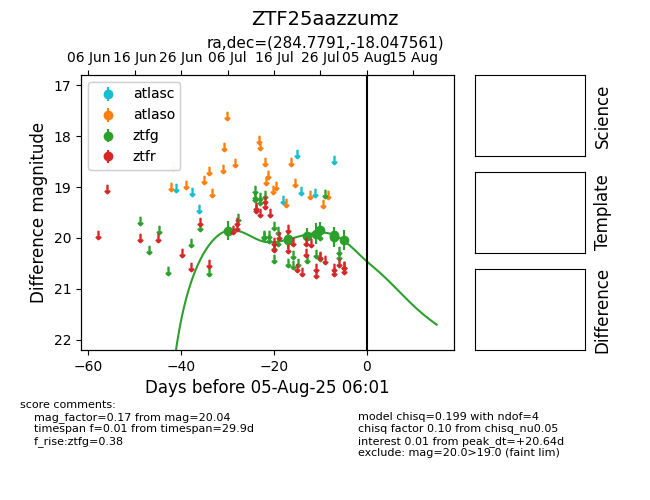

Target ZTF25aazzumz at 2025-08-05 06:01, see:
FINK: fink-portal.org/ZTF25aazzumz
Lasair: lasair-ztf.lsst.ac.uk/objects/ZTF25aazzumz
ALeRCE: alerce.online/object/ZTF25aazzumz
alt names
ZTF25aazzumz (ztf,fink)
coordinates:
equatorial (ra, dec) = (284.7791,-18.04756)
galactic (l, b) = (17.5625,-9.76527)
photometry
last ztfg=20.04
9 ztfg detections
